Method: the production site https://daggerheart-loot.pages.dev, Puppeteer, DOM moves and
injected CSS, 2026-11-05. Scripts beside the shots (d12/d12-mock.cjs,
tables-mid/tables-mock.cjs, tables-mid/tables-wide.cjs,
roll-head/roll-probe.cjs, roll-head/lit-pill.cjs); figures in the
JSON files. Green border: recommended. Red border: alternative, not taken.
Recommended (prop): the page's own d12 (Die faces={12}, lines only, 17x18 px) in
Hope Amber (--hope) and Fear Violet (--fear), no letter, no ring;
the word stays as visible text, so a reader hears it. Alternative (fill): the same die with a
22% fill of its hue. The label row is 21 px instead of 22 px; nothing else moves
(d12/d12-label.json).
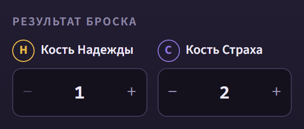
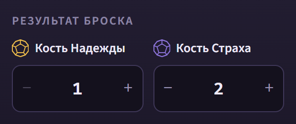
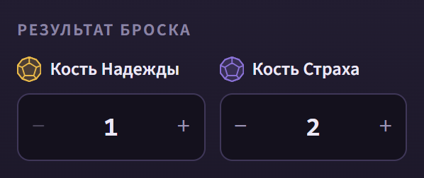
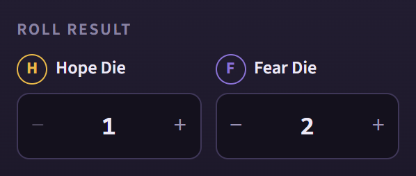
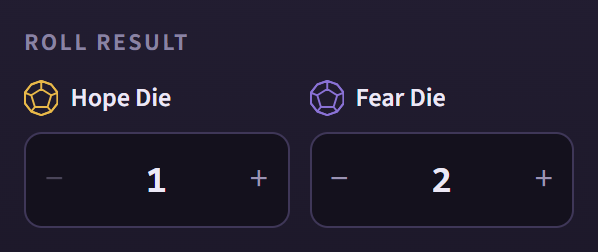
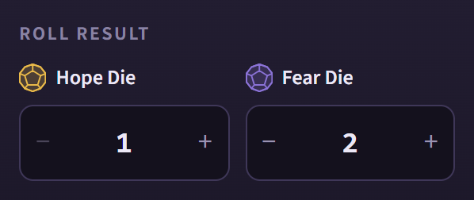
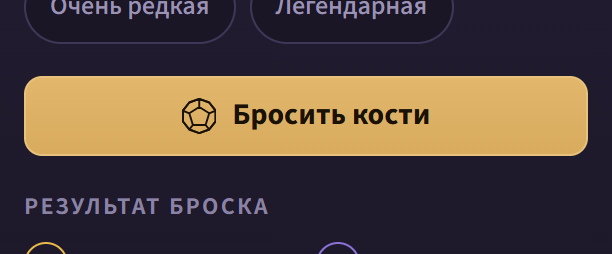
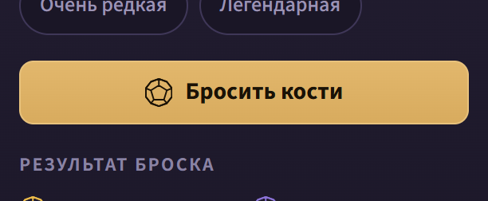
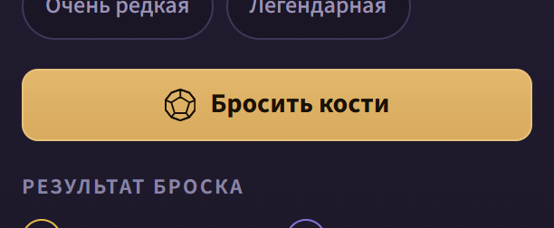
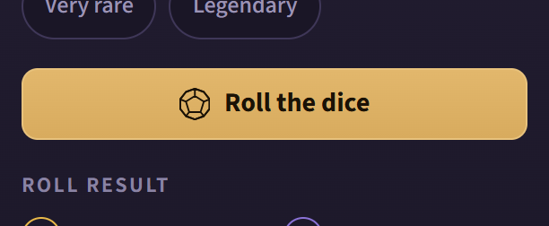
In context: 360 RU, 360 EN, 1180 RU, 1180 EN (the 1180 shots still draw today's head: this mock changes the label only).
| variant | 768x1024 RU / EN | 900x720 RU / EN | what it costs |
|---|---|---|---|
| today = the Head Order Rule's mid band (recommended: named exception) | 334 / 334 (33% of 1024) | 334 / 334 (46% of 720) | nothing: every tab visible, the head steady on every table |
| scroll: one reserved tab line, an overflowing group scrolls sideways | 291 / 291 | 291 / 291 | still over 288; on «Дополнения» 5 of 7 tabs visible at 768, 6 of 7 at 900; a cut label |
| scrollTrim: scroll plus 6 px above the tabs and 12 px under them | 287 / 287 | 287 / 287 | as scroll; 1 px under the limit, 17 px over the 270 design aim |
| noReserve: the slot takes the current group's height | 291 on 6 groups, 334 on «Дополнения» | same | the head jumps 43 px between groups (breaks A steady head) |
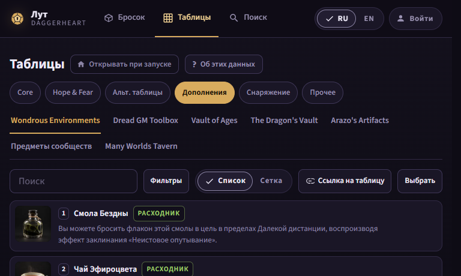
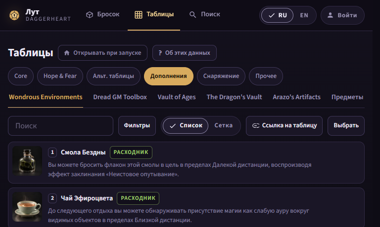
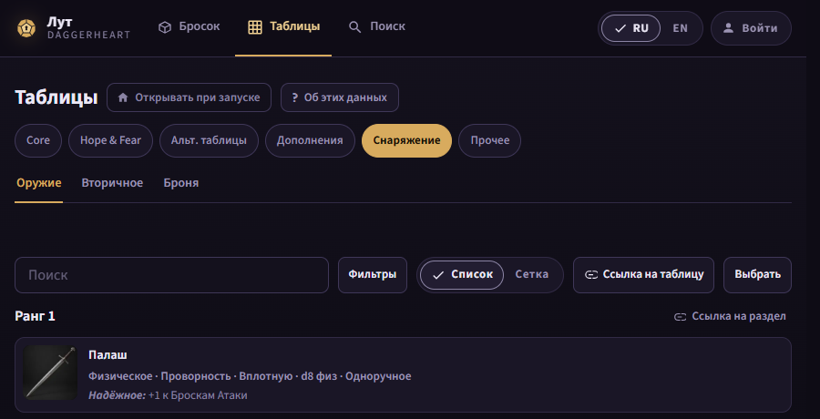
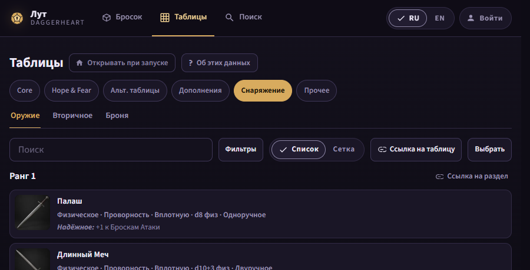
All shots:
tables-mid/tables-{eq-weapon,wondrous}__{768,900}__{ru,en}__{today,scroll,scrollTrim,noReserve}.png; figures tables-mid/tables-mid.json. From 1000 px in the new order (h1, chips,
pin, help): RU 286 at 1000 (the help takes a second row when the chips box cannot shrink; the
batch lets it shrink, so the chips wrap in their box as today: 288), 244 from 1050; EN 244
from 1000 (tables-mid/tables-wide.json,
1000 RU,
1180 RU).
Nine pages, RU and EN, both pin states (roll-head/roll-head.json): from 1000 px
one row on every page; the least room left at 1000 px is 14 px (RU, «Предметы сообществ» lit,
pin pressed) and 27 px with the pin not pressed; first content 267 to 214 at 1000, 1050, 1100
and 1180 px. From 761 to 999 px the pills take their own row: first content 264 at 768x1024
and 900x720, the gap from the title row to the pills 10 px and from the pills to the lead 12
px. The pill row's left edge is one value per language on all nine pages (100 px RU, 65 px
EN).
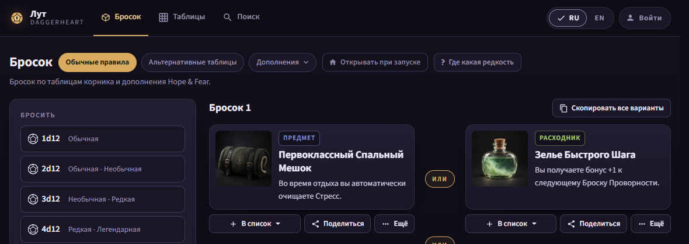
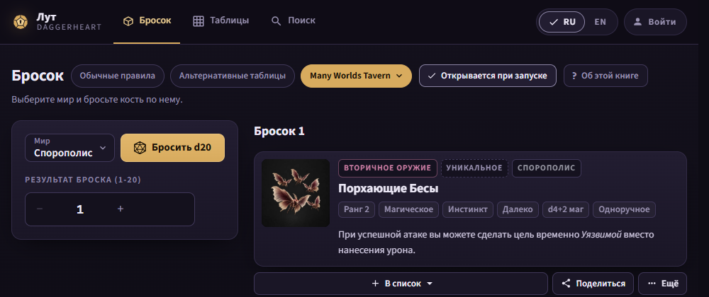
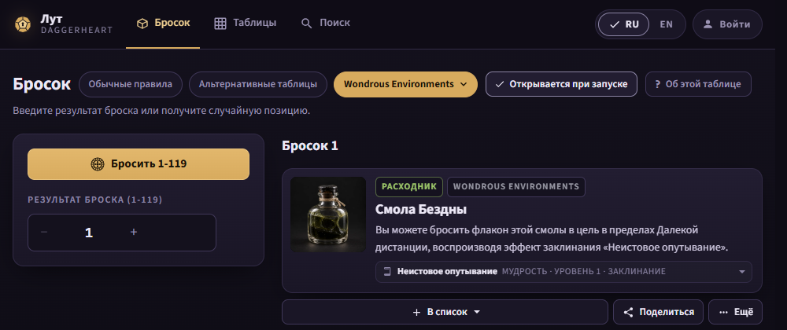
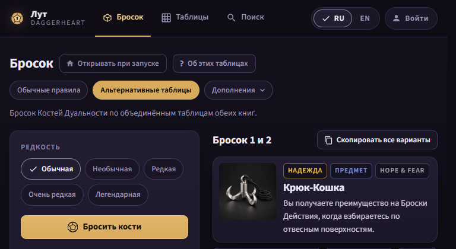
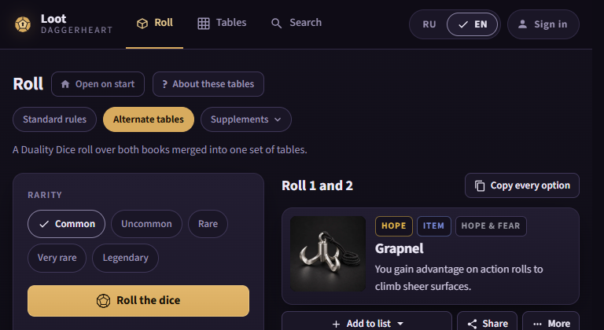
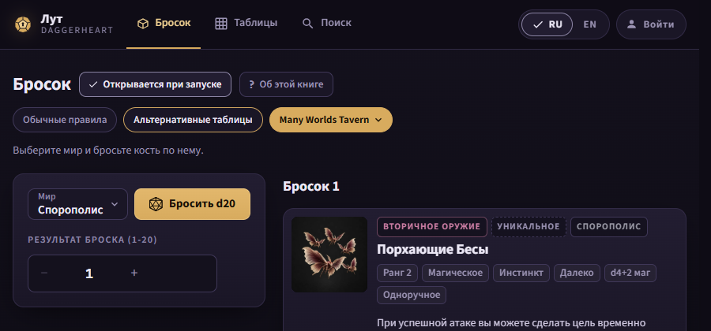
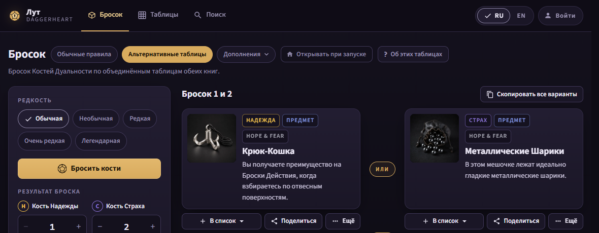
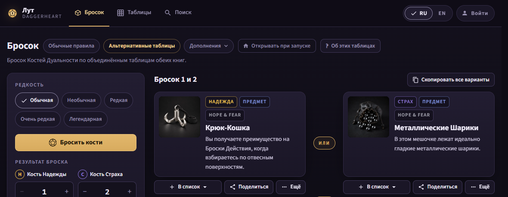
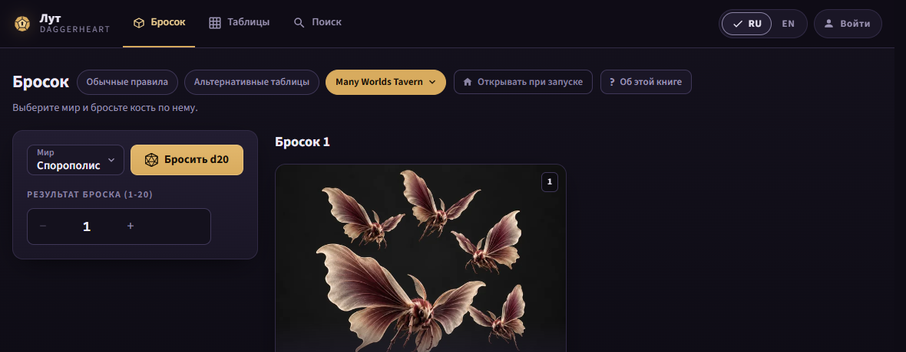
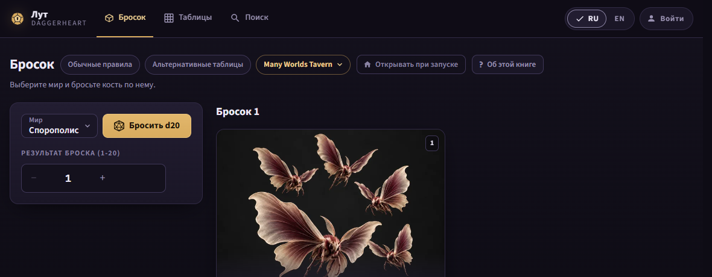
The "homebrew" cells of headorder/index.html (A 261, B 301, prop 266 and 221)
were drawn on /roll/alt with stand-in labels («Расходники», «Таблицы», a help
button), because production's /homebrew needs a sign-in. They show the A-B
difference (one row, 40 px), not the homebrew page. The homebrew head is drawn and measured in
batch N's first step on the built app (#/homebrew as gm3).